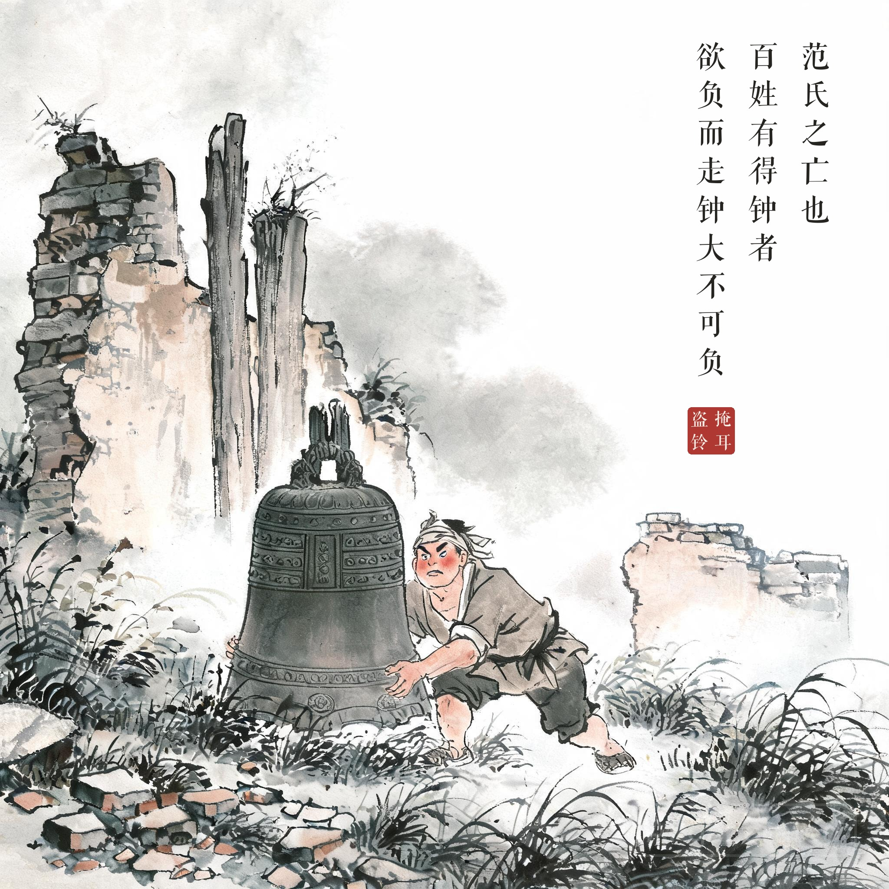
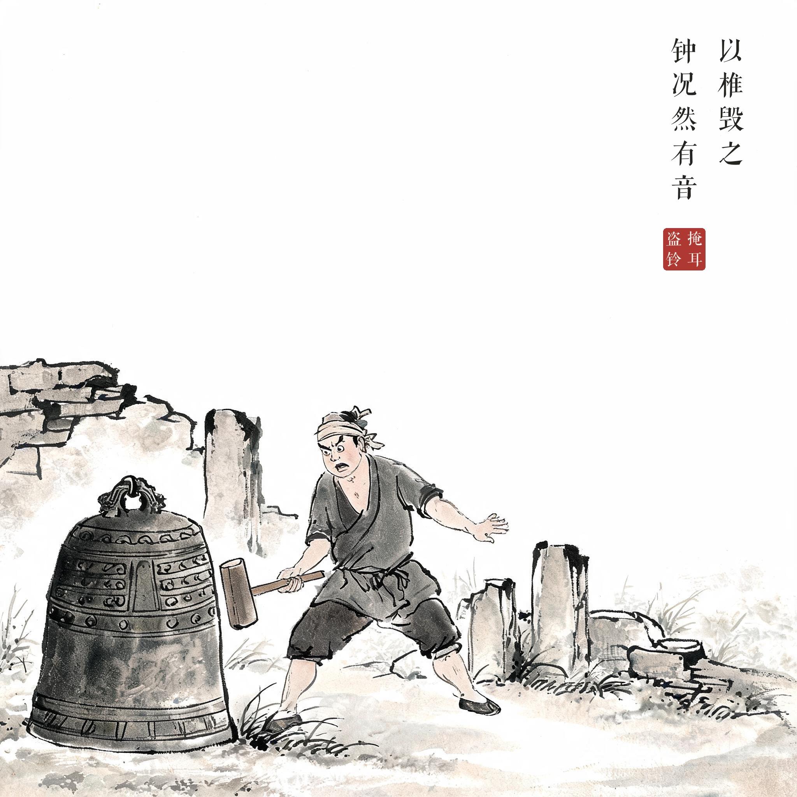
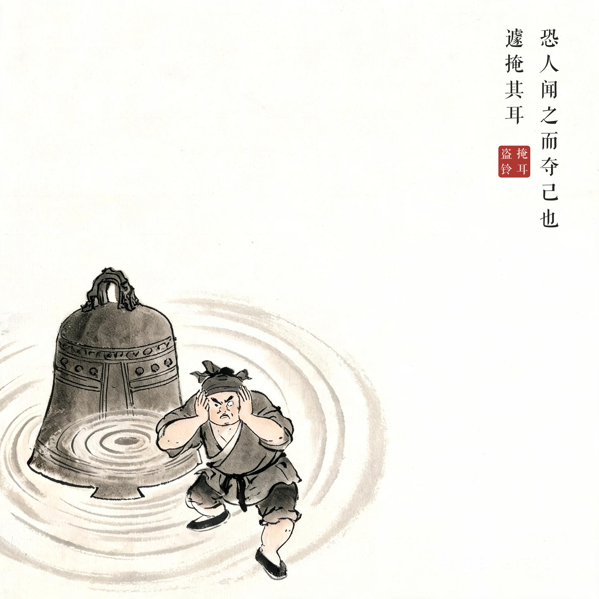
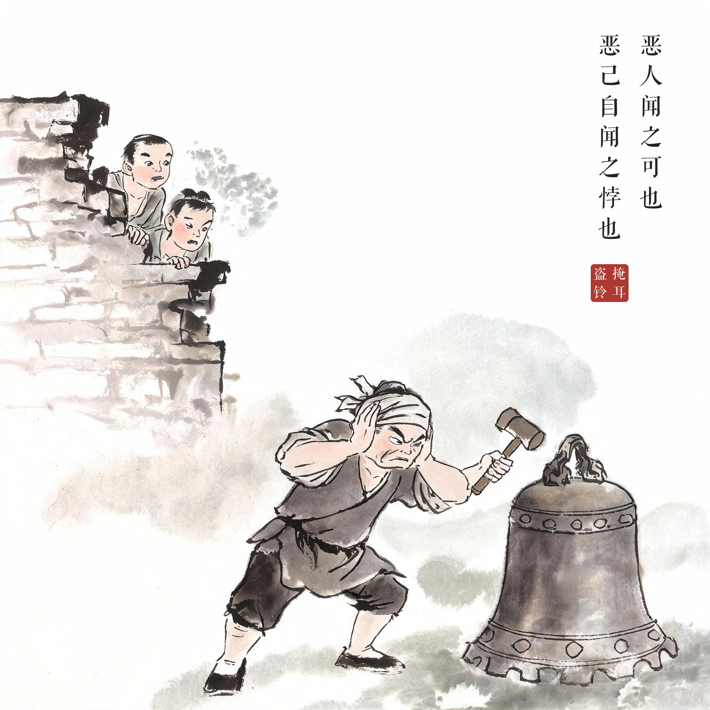

《吕氏春秋 · 自知》
范氏之亡也，百姓有得钟者，欲负而走，钟大不可负，以椎毁之，钟况然有音，恐人闻之而夺己也，遽掩其耳。恶人闻之可也，恶己自闻之，悖也。
范氏败亡的时候，有个人趁机得到一口钟，想背起来跑，钟太大背不动，就用锤把它砸碎。钟"况"地一声大响，他怕别人听见来抢，急忙捂住了自己的耳朵。怕别人听见还说得过去，怕自己听见，就荒谬了。
自己欺骗自己：客观存在的事实不会因为闭目塞听就消失；掩盖问题只骗得了自己，骗不了别人。